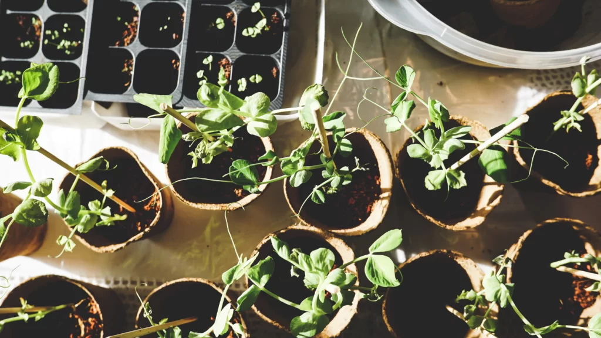

Kertészkednél? Mutatjuk, hogyan fogj hozzá!

A március már dörömböl az ajtónkon! Ezt a hónapot minden kertész epekedve várja: végre elkezdődhetnek a kerti munkálatok! A kertben pedig az a legjobb, hogy rengetegféleképpen okozhat örömet. Mindig újabb és újabb technikákat próbálhatsz ki, új növényeket és lehetőségeket láthatsz benne. Mi arra buzdítunk, hogy vágj bele, akár a negyediken, akár kertes házban laksz!
A kertészkedés alkotó folyamat, közben az ember és a természet együttműködéséből valami nagyszerű jön létre. A növényekről való gondoskodás, fejlődésük nyomon követése egyre többeket vonz a szabadba. Legnagyobb örömünkre pedig egyre többen választják a vegyszermentes, a természettel összehangolt kertészkedés alternatíváit. A kert gyarapítása, igazi élettérré alakítása sokak számára nem létszükséglet, hanem szerethető és hasznos hobbi. Ahhoz, hogy mindezt kiélvezhesd, nem kell óriási kert, hanem elég lehet egy balkon vagy akár egy napsütötte ablakpárkány.